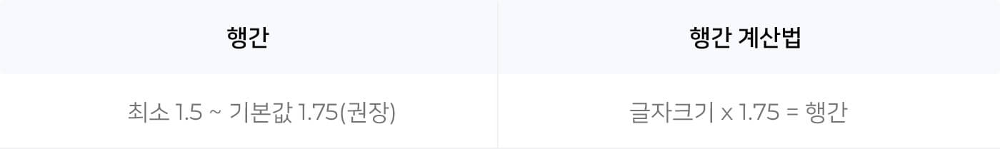
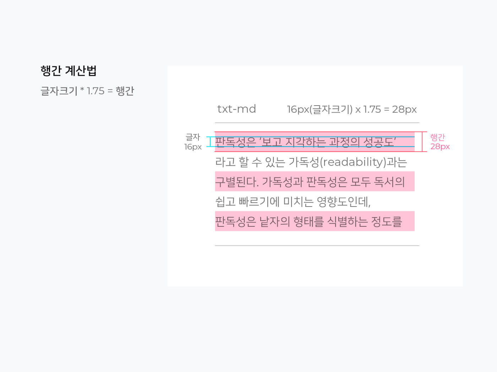

행간
제목과 단락 가이드
글자에는 면과 몸통이라는 개념이 있는데 이상적인 타이포그래피를 균일한 공간 설정이라 가정할 때, 글자사이 및 낱말사이는 모두 면간격이어야 합니다. 글줄사이 역시 글줄높이(또는 글자높이)와 같은 면간격이어야 합니다.

글자의 몸통을 기준으로 행간을 적용하면 글보다 행간이 더 넓어보이지만, 글자의 면적을 기준으로 행간을 적용하면 글과 행간이 동일해보입니다.

이러한 면적기준의 규칙을 적용하면 행간높이는 1.75배수로 계산됩니다. 웹접근성 가이드 WCAG 2.1(”행간은 적어도 문단내의 띄어쓰기space는 글자크기의 1.5배 이상이어야 한다”)에 따라 행간의 최소값은 1.5로 사용하며, 기본값은 1.75를 권장합니다. 이 때 결과값이 소수가 발생할 경우는 반올림한 수치를 적용합니다.
 텍스트의 행 높이는 문자의 크기에 비례합니다.

css행간
글자의 면이라는 개념에서 모든 2d 프로그램은 글자 아래를 기준으로 행간을 가지지만 css에서 코딩을 할때는 위아래로 1/2씩 행간을 적용합니다. 그러므로 마진이나 패딩을 줄 때는 행간의 값이 합산되어 적용되는 점을 유의해야합니다.

좌)포토샵에서의 행간 우) CSS에서의 행간